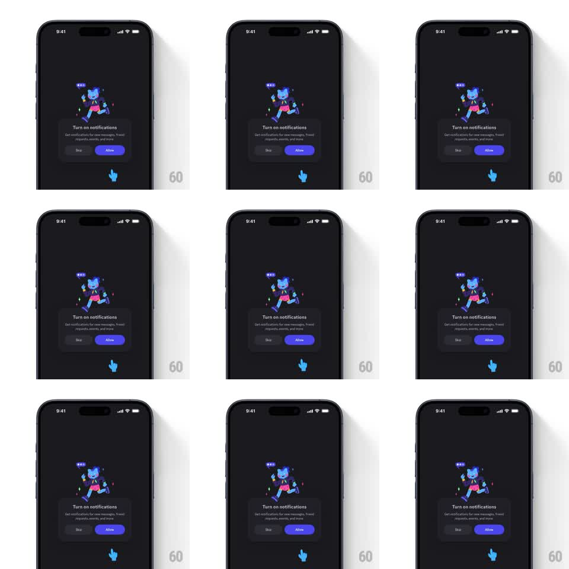

Media
Frame-by-frame

Rebuild this animation 1:1: Discord's "Turn on notifications" prompt - a dark dialog with a running Wumpus illustration and Skip / Allow buttons, with a blue cartoon hand cursor idling below that repeatedly points up and taps toward the purple "Allow" button.

Rebuild this animation 1:1: Discord's "Turn on notifications" prompt - a dark dialog with a running Wumpus illustration and Skip / Allow buttons, with a blue cartoon hand cursor idling below that repeatedly points up and taps toward the purple "Allow" button. ## Integration Integration: stack-agnostic spec - springs given as stiffness/damping, timed motions as duration + curve; map every value to your framework and animation library of choice. ## Scene Dark Discord dialog: a Wumpus character in a jetpack with a notification bubble, "Turn on notifications" title, subcopy about messages and events, and a button row - gray "Skip" left, purple "Allow" right. Below the dialog: a blue cartoon hand cursor. ## Motion spec Pattern: idle hand-tooltip nudging toward Allow. - The dialog pops in once (scale 0.92 -> 1, spring ~300/18; Wumpus floats with a 2.5s bob). - Hand loop (about 2s): the hand rises toward the Allow button (translateY -16pt, 500ms ease-in-out), extends its pointer finger, taps (scale 0.9, 120ms) causing the Allow button to glow/press (scale 0.96, brightness +15%, 150ms), then drops back (500ms) and rests 800ms. - The hand's shadow follows it on the surface below (scale and opacity track the height). - The Allow button keeps a faint persistent glow pulse (opacity 0.85 -> 1, 1.8s) even between taps. ## Calibration - The hand points at Allow specifically - its arc never crosses over Skip. - The tap feedback on the button is visible but does not actually activate anything. ## Reduced motion A static hand points at the Allow button; no loop. ## Don't miss - The hand is Discord blue, matching the brand, and casts a soft shadow. - Wumpus's notification bubble shows three dots that cycle like typing.